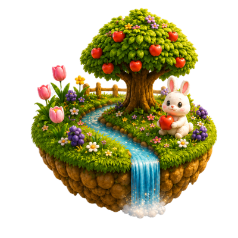
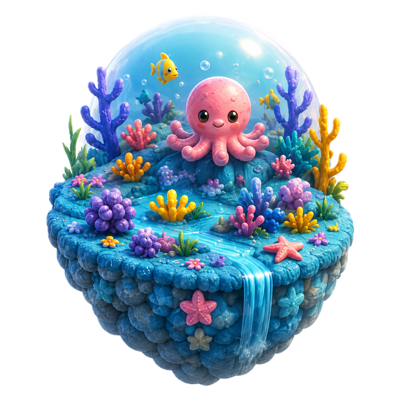
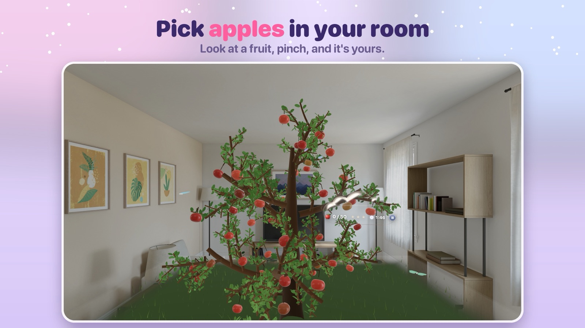
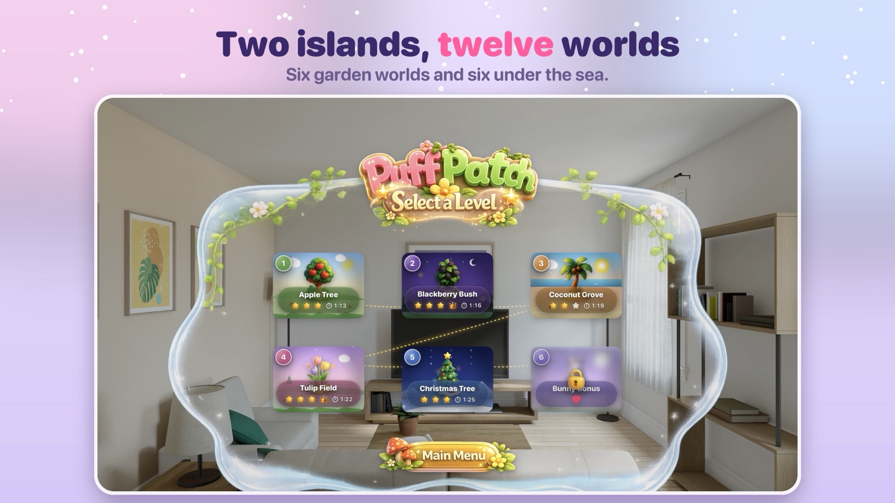
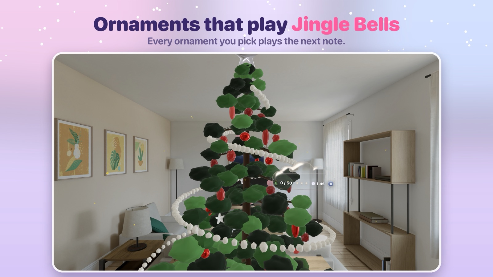
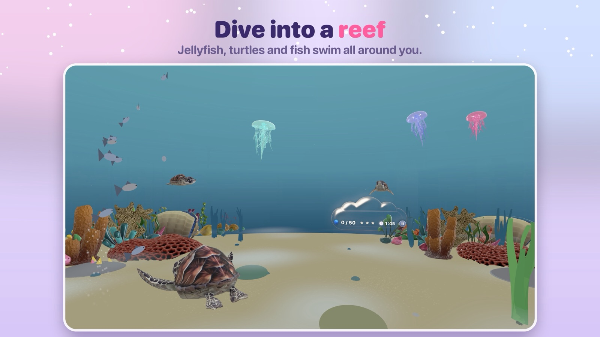
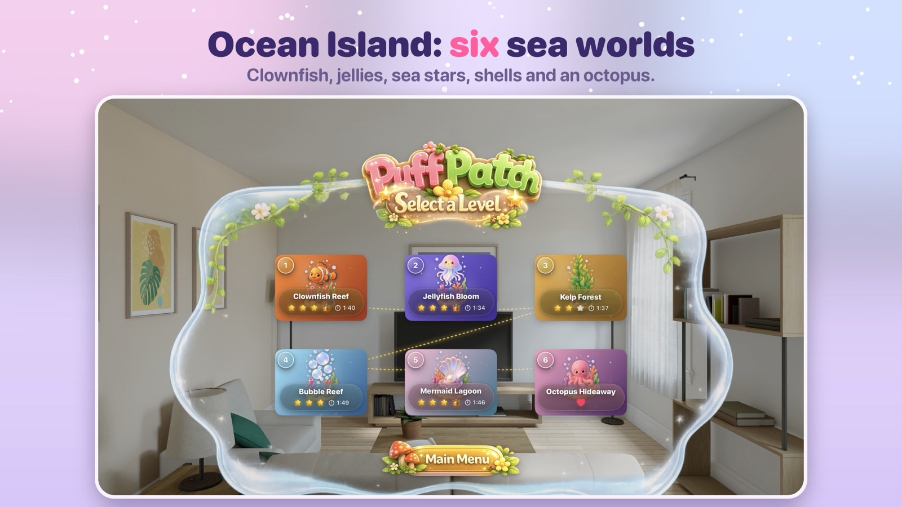
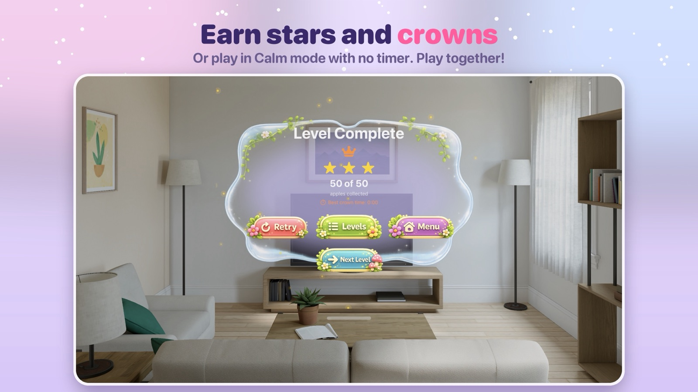

Look. Pinch. Pick!
PuffPatch turns your room into a little garden and an underwater reef on Apple Vision Pro. Look at an apple, a tulip or a jellyfish, pinch, and it's yours. A calm, family-friendly game to play together.
Get PuffPatch Try PuffPatch Lite freeNew in 3.0.1
- Taking off Apple Vision Pro pauses your round, so the timer no longer runs out while you're away.
- Leaving the Ocean Island in the middle of a round brings you safely back to the menu.
- A new Sound effects switch: turn the music off and still hear every pop and chime.
- PuffPatch Lite: the Daily Pick always picks one of your two levels.
Two islands, twelve worlds

Garden Island
An apple tree, a blackberry bush, a coconut grove, a tulip field, a Christmas tree that plays Jingle Bells as you pick, and a secret bunny meadow.

Ocean Island
A clownfish reef, a jellyfish bloom, a kelp forest full of sea stars, a sparkling bubble reef, a mermaid lagoon and an octopus hideaway.






Play your way
Stars and crowns
Two-minute rounds. Pick 20, 30 and 40 for stars, everything for the crown.
Calm mode
No timer at all. Pick slowly and stop whenever you like.
Daily Pick
A new level every day, with a streak to keep.
Bonus levels
Earn every crown to meet the bunny and the octopus.
For grown-ups
No ads, no accounts, no tracking and no data collection. It works offline. PuffPatch includes everything with no in-app purchases. PuffPatch Lite is free and has two complete levels: Tulip Field and Christmas Tree.